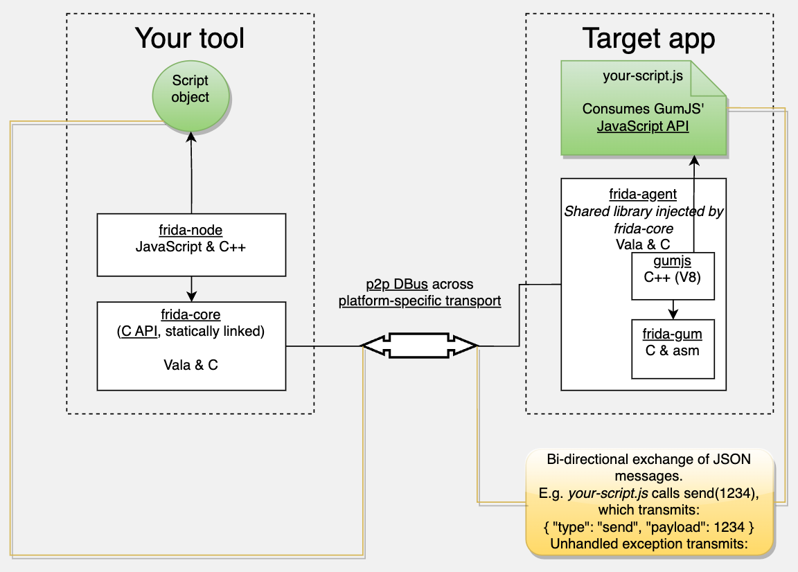
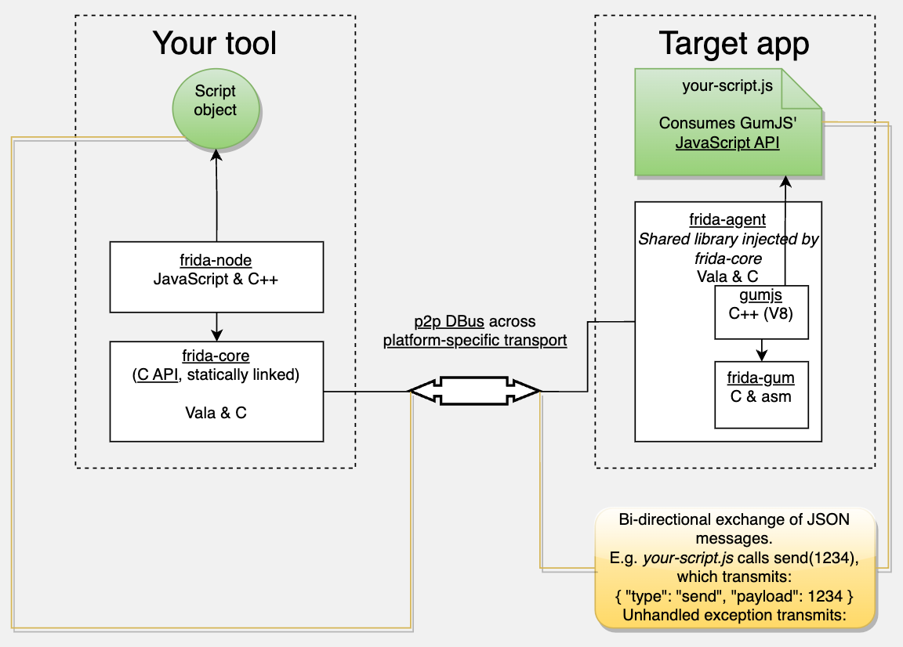

代码和架构
- Frida的架构
- 总体架构
- client=客户端
- frida的各种工具
- frida：frida主体工具本身，用的最多。
- frida-tools：（Win/Mac等）PC端常用到的，除了frida之外的，frida-trace、frida-ps、frida-ls等命令行工具
- frida-trace：按顺序和带缩进的打印所有函数调用堆栈，极大地方便调试内部逻辑
- frida的各种工具
- server=服务端
- client=客户端
- 原理图=架构图
- 
- 其中可见很多关键的点=frida中的子项
frida-codefrida-nodefrida-agentfrida-gumGumJS
- 对应着源码中的各个子项目：详见下面内容。
- 其中可见很多关键的点=frida中的子项
- 
- 总体架构
Frida源码
- Frida源码
- 总入口: https://github.com/frida/frida
core: frida-core- Frida core library intended for static linking into bindings
gum: frida-gum- Cross-platform instrumentation and introspection library written in C
- This library is consumed by frida-core through its
JavaScriptbindings,GumJS.
- This library is consumed by frida-core through its
- Cross-platform instrumentation and introspection library written in C
tools: frida-tools- Frida CLI tools
bindings- python -> frida-python
- Node.js -> frida-node
- Swift -> frida-swift
- .NET -> frida-clr
- GO -> frida-go
- Rust -> frida-rust
- QT/qml -> frida-qml
其他- Frida支持多个移动端的互操作，所以有分别的内部的互操作相关的内容
- iOS端的：frida-objc-bridge
- Objective-C runtime interop from Frida
- Android端的：frida-java-bridge
- Java runtime interop from Frida
- iOS端的：frida-objc-bridge
- Capstone
- 记得是：Frida内部用到了Capstone，但是有些额外的内容要微调，所以单独fork了Capstone源码，自己同步更新了
- Frida支持多个移动端的互操作，所以有分别的内部的互操作相关的内容
- 总入口: https://github.com/frida/frida